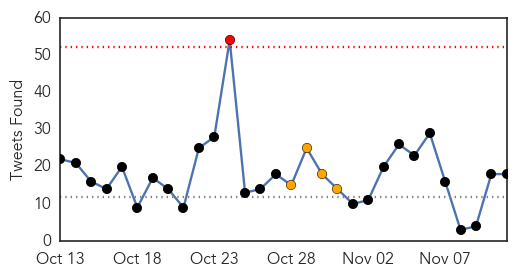
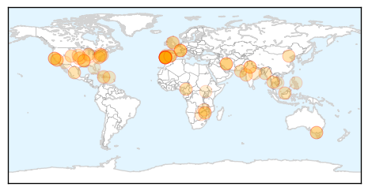

Ebola
30-Day Web Trend
3 alerts, 13 warnings

30-Day Twitter Trend
5 alerts, 12 warnings

Article Locations

Article Confidences

Top Articles:
- 1.000
- N.Y. doctor, free of Ebola, discharged from hospital
- 1.000
- N.Y. doctor, free of Ebola, discharged from hospital
- 1.000
- Ebola: Dramatic drop in Liberia, Mali prepares to lift quarantine restrictions
- 1.000
- Ebola in Sierra Leone: 50 deaths reported in Koinadugu since mid-October
- 1.000
- First Ebola Case NYC
- 1.000
- US Now Free of All Known Ebola Cases
- 1.000
- Texas nurse Nina Pham cured of Ebola
- 1.000
- Erecting medical defenses against Ebola
- 1.000
- Worst Ebola outbreak on record tests global response
- 1.000
- UM Health System, nurses union agree to Ebola contract
- 1.000
- MSF: Ebola rapid teams needed for Liberian hot spots
- 1.000
- US doctor declared cured of Ebola: health officials
- 1.000
- N.Y. doctor to be released after Ebola recovery; US opens new unit in Liberia
- 1.000
- Ebola May Kill 1 in 7 Pregnant Women in West Africa
- 1.000
- U.S. Ebola experience changes thinking about disease
- 1.000
- America's success against Ebola shows disease 'eminently treatable'
- 1.000
- There Are Now Zero Cases Of Ebola In The United States
- 1.000
- America all clear of Ebola — for now
- 1.000
- iafrica.com NY doctor cured of Ebola
- 1.000
- CHRONOLOGY-Worst Ebola outbreak on record tests global response
- 1.000
- Dr. Craig Spencer, Ebola free, showered with applause
- 1.000
- CHRONOLOGY-Worst Ebola outbreak on record tests global response
- 0.999
- Last US Ebola patient cured, released from hospital
- 0.999
- N.Y. doctor, free of Ebola, discharged from hospital
- 0.999
- Ebola fight to be a top topic for Congress
- 0.999
- Beaming NY Doctor Walks out of Hospital Free of Ebola
- 0.999
- 'Epidemic of fear' has driven Ebola debate, experts say
- 0.999
- Engineering a response to Ebola
- 0.999
- Ebola crisis: New York doctor Craig Spencer cured of virus and due to be discharged, officials say
- 0.999
- NYC Doctor Now Ebola-Free, May Be Discharged Tuesday From Hospital
- 0.999
- WHO declares Uganda Marburg-free
- 0.999
- Another Sierra Leonean doctor infected with Ebola
- 0.999
- Uganda says free of Ebola-like Marburg after outbreak in September
- 0.999
- Many women risk dying in childbirth in Ebola-hit countries
- 0.999
- New York doctor now free of Ebola discharged from hospital
- 0.999
- Free of Ebola, NY doctor and WSU grad Craig Spencer leaves hospital
- 0.999
- American Who Contracted Ebola in Africa to be Treated in MD
- 0.999
- Another Sierra Leonean doctor infected with Ebola
- 0.999
- Liberia, Mali see crucial gains in Ebola battle – signs virus is waning, says WHO
- 0.999
- Last US Ebola patient Craig Spencer declared free of virus, will leave hospital
- 0.999
- Another doctor infected with Ebola
- 0.999
- Ebola crisis: Mali confirms second death
- 0.999
- Ebola cases declining in Liberia, rising in Sierra Leone 11/11/2014
- 0.999
- Doctor who had Ebola leaves New York City hospital
- 0.999
- Surgery in the time of Ebola
- 0.999
- NYC Doctor Cured of Ebola ‘Very Proud’ of Doctors Without Borders Work in West Africa
- 0.999
- U.S. doctor free of Ebola — turn focus back to West Africa
- 0.999
- N.Y. doctor, free of Ebola, discharged from hospital > KAGS TV
- 0.999
- NY doctor free of Ebola virus, to be released from hospital
- 0.999
- Unicef Ebola expert Dr Peter Salama does Reddit Q&A
Showing top 50 articles...
Top Tweets:
- 0.947
- Ebola Today: Lara Logan Quarantined after '60 Minutes' Ebola Report. http://t.co/6BsrEMRpBO
- 0.947
- Ebola Today: Lara Logan Quarantined after '60 Minutes' Ebola Report http://t.co/yQTkCKJlle
- 0.929
- Public health management of persons having had contact with Ebola virus disease cases in the EU http://t.co/QOZHDCMsGp
- 0.921
- Governments, groups striving to become as agile as the Ebola virus. http://t.co/RHm8dIEJSX
- 0.892
- Ebola watch: Outbreak still growing in Sierra Leone. http://t.co/ThdpL1BVYN
- 0.880
- Governments, groups striving to become as agile as Ebola virus. http://t.co/XKKVd9PIvd
- 0.866
- Ebola Outbreak West Africa: FAO Regional Response Programme (October 2014 – September 2015) @FAOemergencies http://t.co/gJRj3ORXOO
- 0.855
- RT: People can’t spread Ebola if they aren’t sick. Only way to get Ebola is direct contact w/ body fluids of a person w/ symptom…
- 0.855
- RT: People can’t spread Ebola if they aren’t sick. Only way to get Ebola is direct contact w/ body fluids of a person w/ symptom…
- 0.849
- Sierra Leone Defends Jailing Critic of Ebola Response http://t.co/ebObTaxQXe
- 0.847
- SierraLeone. Ebola cases in Sierra Leone show sharp rise ebolaresponse http://t.co/Qc2h5qi0KN
- 0.817
- Ebola Today: 21 Days Later Nurse in Maine Officially Ebola-Free http://t.co/a49qYowECY
- 0.815
- Ebola treatment center opens; Ebola threatens food security in Liberia. HealthSecurity http://t.co/H1JhGDbj22
- 0.802
- Nurse Will Pooley – back treating Ebola patients in Sierra Leone. http://t.co/FVAk1tOBRa
- 0.791
- Another Sierra Leonean Doctor Infected With Ebola. http://t.co/8Jgj70dD2W
- 0.782
- Interactive map. 2014 West African Ebola outbreak ebolaresponse http://t.co/xMYFjCpSA9
- 0.768
- Ebola Today: Outbreak May Kill 1 in 7 Pregnant Women in West Africa. http://t.co/FMqwDBMGLe
- 0.761
- RT: Now I'm convinced Sierra Leone is losing the Ebola fight if not already. This is why: Monday 10 November - Usman... http:/…
- 0.759
- expert panel is assessing all available data for potential agents to try in ebola virus disease. Wise to follow their recommendations.
- 0.742
- New York doctor cleared of Ebola, which means there are no known Ebola .... http://t.co/1xL5AgZGjN
- 0.739
- Jihadist group sends vial of 'Ebola virus' to newspaper. http://t.co/RHP4gRmyej
- 0.729
- In Quick Response, Mali Thwarts an Ebola Outbreak. http://t.co/BjJgZkeDqn
- 0.720
- RT: Mali suffers new Ebola case with death of a nurse: Bamako (AFP) - Mali has suffered a new case of Ebola ... http://t.c…
- 0.690
- RT: Turning the Tide on Ebola: Scaling up Public Health Campaigns Before it's Too Late ebola comdev http://t.co/rxDagkkxrb
- 0.688
- Amiodarone would NOT be in my shortlist of investigational agents to try in ebola virus disease. Groups should refer to shortlist.
- 0.684
- West Africa: The Ebola Crisis and Capitalism ebolaresponse http://t.co/bGUxOODVd3
- 0.679
- Ebola-Infected NYC Doctor Will Leave Hospital. http://t.co/zTdZfJboln
- 0.677
- Lara Logan in Ebola quarantine after Liberia trip. http://t.co/h4jw5rC8r2
- 0.659
- Coming Up: Last US Ebola Patient Leaves Hospital. http://t.co/PIBiNiT7Gg
- 0.628
- Mali case, Ebola imported from Guinea epolaresponse @WHO http://t.co/NH4J5nAnCK
- 0.624
- A nurse died of Ebola in Mali after caring for a patient who had come from Guinea. http://t.co/L3eVtciRV0
- 0.613
- Ebola 4 Go: Jimmy B's music video from Sierra Leone http://t.co/ra0mqMzEJ2
- 0.577
- AFD Blog `@ECDC_EU: New Public Health Management Guidelines On Ebola' http://t.co/dfrHqu7CjQ
- 0.561
- RT: Photos: In the eye of the Ebola storm - CNN (10 Nov) http://t.co/utqDCKtIYg ebola http://t.co/q2L6o0JXfI
- 0.543
- Hi -- do you have thoughts about the new federal Ebola quarantine rules? Would like to interview you.
- 0.509
- SMS service could spot the next Ebola outbreak zone ebolaresponse http://t.co/Colrq0gtOx
Unknown
30-Day Web Trend
0 alerts, 0 warnings

30-Day Twitter Trend
0 alerts, 0 warnings

Article Locations
Article Confidences
Top Articles:
- 0.998
- Legionnaires' outbreak in Portugal a 'major public health emergency', WHO says
- 0.994
- Portugal Legionnaires' disease outbreak kills five
- 0.994
- Mass Flu Clinics Rescheduled
- 0.993
- WHO: Legionnaire's outbreak major health emergency
- 0.993
- WHO calls Portugal's Legionnaire's outbreak a major public health emergency
- 0.993
- Portugal Legionnaire's outbreak 'major public health emergency'
- 0.987
- Legionnaires' outbreak in Portugal "major public health emergency": WHO - Xinhua
- 0.978
- Five dead, 233 infected in Portugal outbreak
- 0.978
- Number of Portuguese infected with Legionnaires' disease rises to 278
- 0.955
- Portugal Legionnaires' disease outbreak kills five - Panorama
- 0.955
- Polio this week as of 4 November 2014 - World
- 0.917
- Chicago Tribune
- 0.917
- Chicago Tribune
- 0.917
- Chicago Tribune
- 0.917
- Chicago Tribune
- 0.917
- Chicago Tribune
- 0.917
- Chicago Tribune
- 0.910
- The world windows to Thailand
- 0.910
- The world windows to Thailand
- 0.910
- The world windows to Thailand
- 0.898
- Portugal traces deadly Legionnaires' outbreak to cooling towers
- 0.897
- NAACP conventioners fall sick due to Norovirus
- 0.895
- Portugal traces deadly Legionnaires' outbreak to cooling towers
- 0.889
- Portugal traces deadly Legionnaires' outbreak to cooling towers
- 0.869
- Badin's first polio case surfaces, provincial toll rises to 24
- 0.866
- Yahoo buys video ad service BrightRoll for $640 mln
- 0.866
- Abbott, Putin urge speeding up of probe into Flight MH17 crash, Kremlin says
- 0.866
- Abbot, Putin urge speeding up of probe into Flight MH17 crash, Kremlin says
- 0.866
- US says cannot confirm status of Islamic State leader after strike
- 0.865
- Benton County Flu Clinics - Story
- 0.862
- Virus may affect mental abilities: US researchers
- 0.854
- RUH asks for help to keep it norovirus-free this winter
- 0.831
- A dozen NAACP conventioners rushed to the hospital with norovirus in San Francisco Bay Area
- 0.806
- Bangladesh: MSF responds to an upsurge in malaria cases - Bangladesh
- 0.772
- Meet chlorovirus ATCV-1, a virus that can make humans more stupid : LIFE : Tech Times
- 0.763
- Study: Anti-Typhoid Gene Found, May Improve Vaccines — Naharnet
- 0.745
- Econet Zimbabwe taps into nanotech and water, what’s next?
- 0.735
- Europees Jaar van de Ontwikkeling: Onze wereld, onze waardigheid, onze toekomst
- 0.707
- Anti-typhoid gene may improve vaccines
- 0.702
- Wiedergeburt des Netzwerks Regionen für Gesundheit (WHO
- 0.682
- Portuguese investigators hunt for source of Legionnaires’ outbreak
- 0.663
- Joice Mujuru still Zimbabwe VP despite reports
- 0.650
- Norovirus blamed for illness outbreak at upscale California hotel
- 0.593
- What really ails Phl public health system
- 0.589
- Universal health coverage: An empty promise without focusing on chronic diseases
- 0.583
- 8 women dead, 50 hospitalized after sterilization surgery in Chhattisgarh
- 0.579
- Free heart surgeries for Haitian kids at Health City Cayman Islands
- 0.577
- Yorkshire surge in sycamore poisonings
- 0.560
- Legionnaires' cases multiply; PM rejects idea of government negligence
- 0.558
- Ministry lifts ban on pig movement
Showing top 50 articles...
Top Tweets:
- 0.520
- RT: The flu & pneumonia can cause a serious ordeal if you have heart disease or have had a stroke. http://t.co/jDKEdxo6e1 …